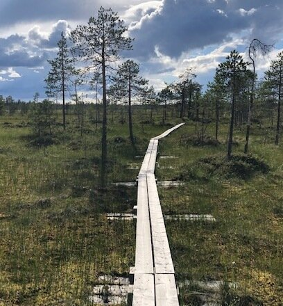

Koulutus:
2023 Kauppatieteiden maisteri, Vaasan yliopisto
2008 Kauppatieteiden kandidaatti, Vaasan yliopisto
2005 Ylioppilas, Lahden lyseon lukio
Työkokemus:
2022 - Controller, HUS-yhtymä
2018 - 2022 Erityisasiantuntija, Työ- ja elinkeinoministeriö
2014 - 2018 Taloushallintoasiantuntija, Suomen Akatemia
2012 - 2014 Projektikoordinaattori, CIMO
2011 - 2010 Hankekoordinaattori, Vaasan yliopisto
